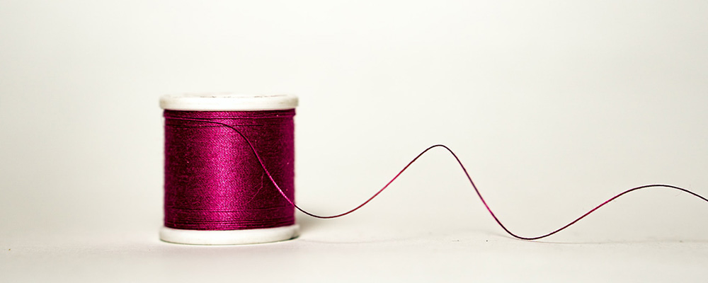
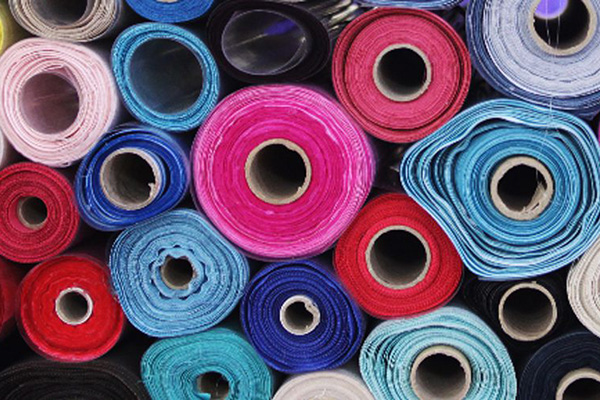
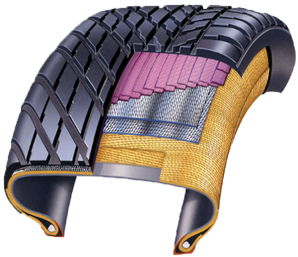

home>사업소개> 산업자재
산업자재

“최적의 첨단소재로 고객의 안전과 행복을 최우선 합니다”
- 
-
- INDUSTRIAL
MATERIASL. - 효성첨단소재는 자동차, 토목·건축, 농업, 군수 등 여러 산업분야에 적용되는 고강도 산업용 원사 및 직물과 강선 소재를 생산하고 있습니다. 효성첨단소재는 타이어코드, 자동차 시트벨트용 원사, 에어백 원단과 같은 세계 1위 제품과 지속 가능한 성장을 견인할 신소재의 자체개발 및 상업화를 통해 경쟁력을 강화하고 있습니다.
- INDUSTRIAL
-
효성첨단소재
- 세계인이 사랑하는 Global Life 선도 기업
- 효성티앤씨㈜는 Global No.1 스판덱스 브랜드 '크레오라'를 비롯, 나일론, 폴리에스터 원사와 직물, 염색 가공제품을 생산·공급을 통해 Global 섬유업계를 리드하는 섬유 종합메이커임과 동시에 철강·화학분야를 중심으로 유통과 물류를 통해 전 세계 기업과 소비자를 연결시키는 역 부문으로 사업을 이루고 있습니다.
- 
-
산업용사 - 고객 니즈에 맞춘 국내 산업용 섬유 산업의 선두주자
- 폴리에스터 원사, 나일론 원사, 카페트용 원사
- 효성첨단소재가 생산하는 산업용사는 자동차 산업, 토목, 건설, 운송 사업 등 다양한 사업분야에서 사용되고 있습니다. 국내 산업용 섬유 산업의 선두주자이자 최대 업체로서 고객 니즈에 맞는 다양한 제품 개발·제안에 앞장서고 있습니다.
-
최첨단소재 - 자체기술로 개발한 아라미드와 탄소섬유
- 아라미드 원사, 탄소재료
- 기존 산업용 원사(폴리에스터, 나일론) 뿐만 아니라 신소재인 아라미드, 탄소섬유를 개발, 상용화하여 변화하는 산업 및 고객의 니즈에 맞추고 있습니다 자체기술로 개발한 효성첨단소재의 아라미드와 탄소섬유는 고강도의 물성을 발현하고 있으며, 다양한 산업 분야에 활용 가능한 잠재력을 갖고 있습니다.
- 
-
타이어보강재 - 글로벌 폴리에스터 타이어코드 시장점유율 1위
- 타이어코드, 스틸코드, 비드와이어
- 효성첨단소재는 세계적으로 품질과 기술력을 인정받아 폴리에스터 타이어코드의 경우 글로벌 폴리에스터 타이어코드 시장점유율 1위를 유지하고 있으며 세계 유수의 타이어 제조 회사에 타이어 제품을 공급하고 있습니다.